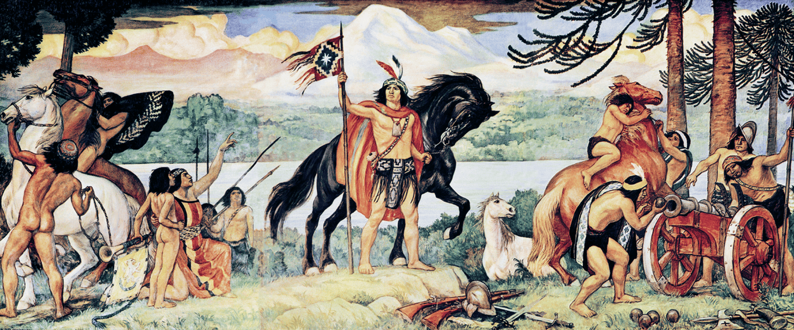
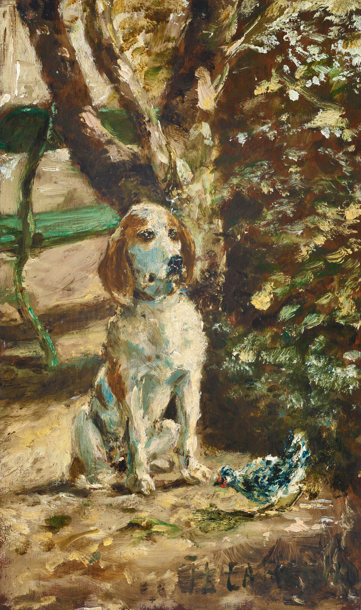
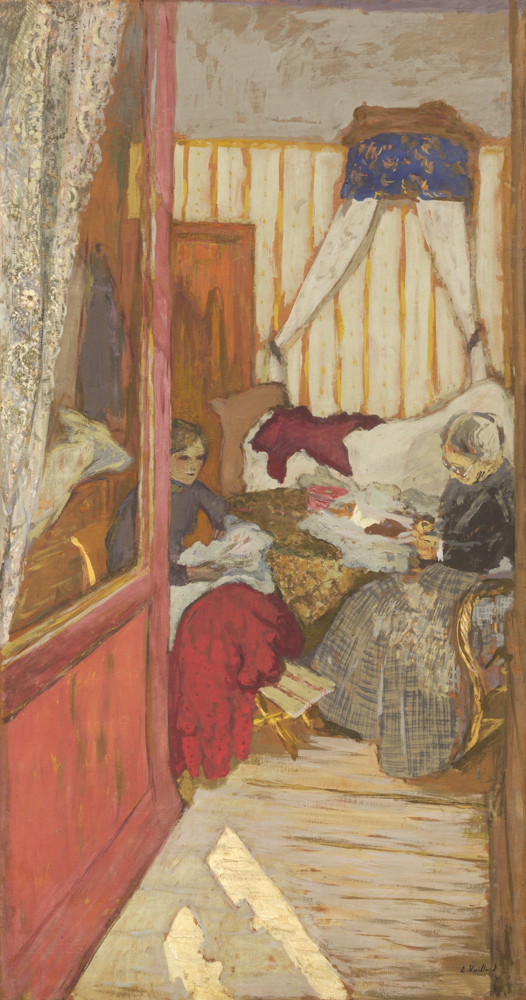
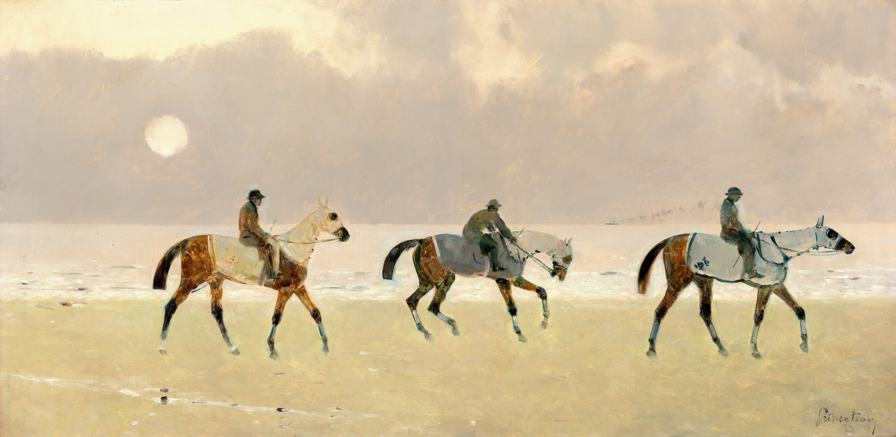
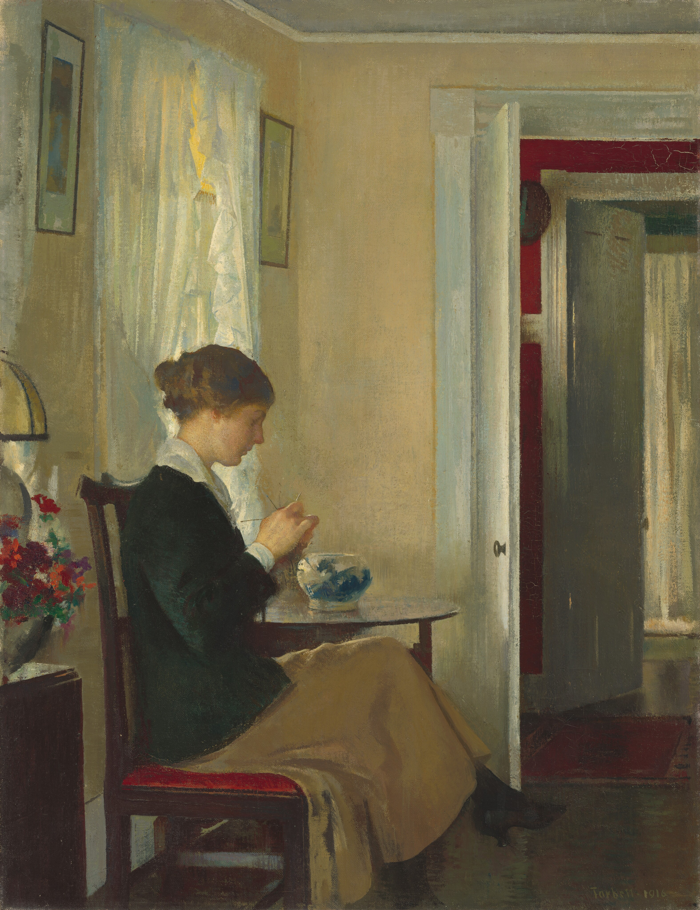
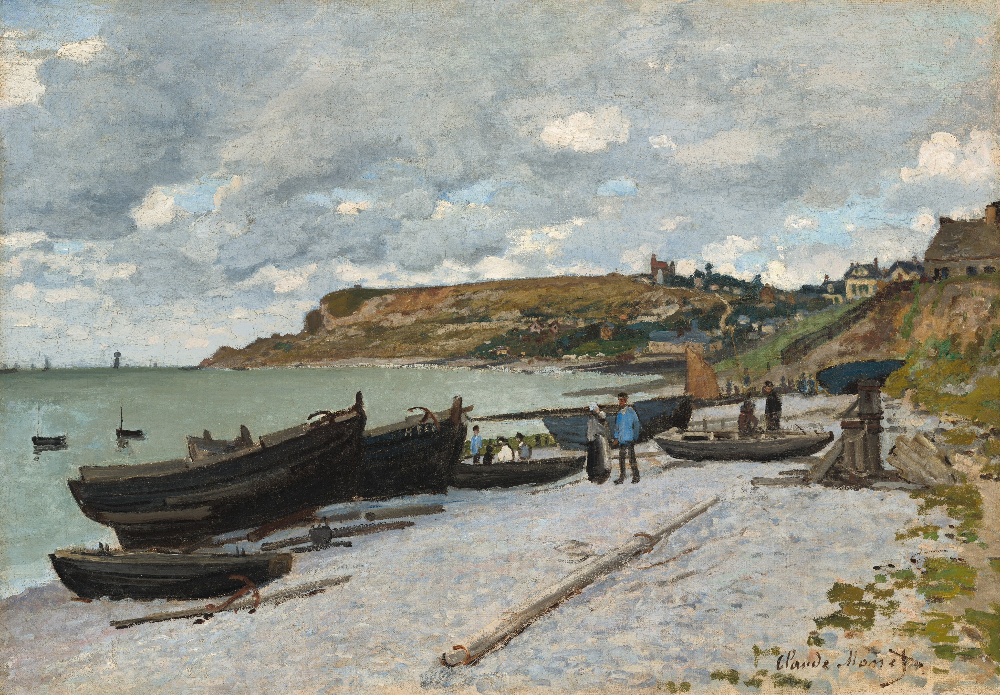
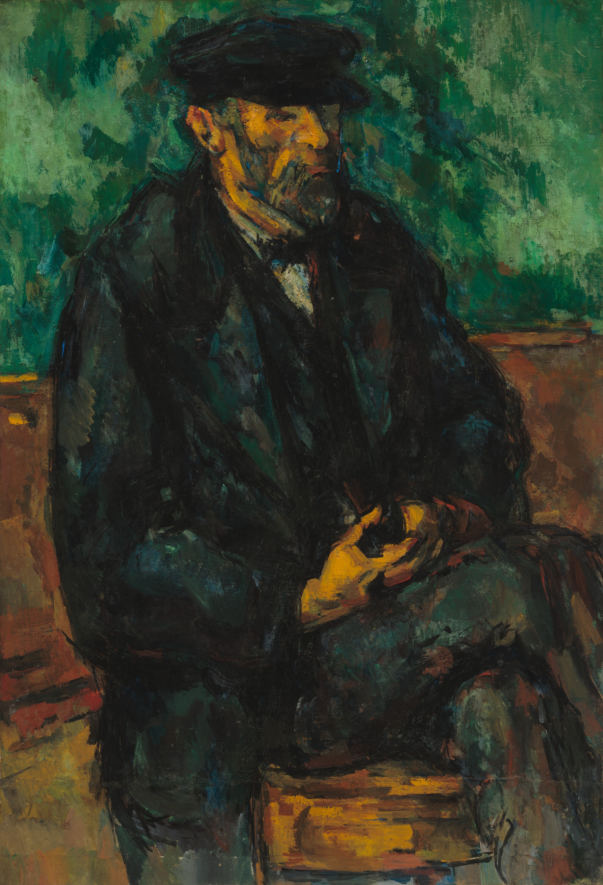

TITLE 105
Ese día estaría con Lautaro -Sorpresa,
----El sueño me pilló -me quedé atrás -Más atrás,
---Ni al parlamento llegué --no miré las flores,
Y las guindas cayeron cómo sacudida de cerezas,
Cajones de tres hijuelas --Puas de puas encima,
Y ya sabemos --si no es por la Sorpresa -Voy,
Sí no es por la cabeza --No voy,
Oh! Selva oscura padre de las casas --Desde el rancho,
Gentes de tropas de familias y lanzas veloces sobre los pájaros,
--Desde el domo del roble -Pinos de cipreses y son por los aires,
---Airosos de verdad -Ríos de los cautos -Vamos
----Avanzando que me siguen --Humeantes manadas,
-----De las manos amarradas -Nada --Nodos de nudos
----Y estaba asustado -A toda maquina por detrás,
---Los intenté alcanzar -Por los Matorrales -Mirar.
--Baldes de aguas sobre mis ojos! -No mirar.
-Y me vieron!!! -Piernas de hierro que arden -Naranjo,
--Campos sobre campos y no estoy oculto -OSALTOS,
---Y ahí vienen! Y sólo soy un niño -Y mi madre!
----Y yo sólo quería saber! Cómo dónde cuándo! ¿?¿
----Por las chiripas volando!! -Árbol de árboles y estoy bajo la tierra de lo alto,
-----Por los Ganchos rompiéndose! -Pasando,
---Atacandome desde el rojo mas rojo -Rasguños de osos
--Y me mantengo en llamas del frio de los aires
-Sansón de los sansones -----Niño!!! -Te hablo!
------Que el topo no me lleve!
-----Y vuelo y alas y lomos y pelos y frente los afrento,
---Y nadie me conoce -Las 12 las 3 las 11!
-Para entonces --Yo y mi árbolito -Abolidos todos -Nadie
--Soy el joven -Sí -Él de siempre
---Sembrando corazones
----?¿...
TITLE 106
Relativamente no soy especial -En el espacio,
Generalmente no soy relativo -Activo,
Y estoy congelado a Kelvin Celsius!
---The mealy moore maly machine! --Flip flops!
--Quién viaja más lento? -Parece que flotamos,
---El Horizonte del evento -precisó cuotas sin interés!
----The maze of the runners and we are in contact -Act
-----News of the world and computers ON.
------Teorías de los informantes -Infantes flamantes
-----Mantis de antes -Montos insuperables --Wow!
----Implacables -Cables de cobre y alambres,
---Apollo Eleven from labs and there's no astronaut!
-Stephen the key over the board -The boring Steam
--Attention! The engine is all you need -¿No?
---I do not know -¿Who knows? --Arm and Strong.
----1,2,3 -Recording the scene -Theme of the tea.
----Quanticamente no estoy despiert/ -A ver,
---Físicamente no existo -Tierra a la vista -Revistas
--Gral. Theorem give me the lecture at 300 on time.
-Ah! -The space of the logs -lags -bugs -bells -11 -others
-¿?...
--Triumph the perceptron
---Perception I am not
----Presition we do not know -How?!
¿
TITLE 107

One of the latest speaks of the skies of the Elqui,
Breaks to the bones and we are dynamics -World,
Sanalife come across -Yes --The tour of the jets,
Alfa y Omega -No soy -Somos -No sé -Plot.
--Geologically breaking down from -ants land.
-Explori explorer of the restaurant -Torrante!
---My mother my father my brothers and I -Splash,
----Noto que notas desde el notario -Comis -Ari/s
-----Varios de Peter los Lagos -Maxwell again! -Zip
----The beauty the botes Boeing the boinas blancas.
---Para las palancas -En la estación yo no miento,
--Puertas de pasto y somos portill/s -Pillan Chiquill/s
-Que masda -Dializado desde las shower dash -Crash
--OHLLAND & BAQUEDANO
---Muéstrame la muestra Angela Materna -Sin terno.
----Despaila las pailas paletas de pasmi -Derivando.
----Hyper Active action motion notion news from the flowers
---Homo -grafos de la caligrafía --Cirugía.
--Ah! no -Me urge una cicatriz -IA
-Consultó al consulado los deberes haberes del derecho
-Y vamos lanzado tickets -Byproduct The Tibet -Zeta.
--Nevertheless is solaris ex solum -Umbrellas from hat.
---Gray and the glass -Amerita un extracto del artículo
----Vehículos over vehicles overseas overtime -Crónicas de los actos.
-----¿?
----Sin frenos,
---Montañas de nieve
--Copos over Raul's chicken -Check.
-Y son por aires y ¿Quién l/s ha de atrapar?
TITLE 108
Prohibido! -CESFAM de las sábanas de nuevo
--Estrictamente tratados públicos! -Pablo
---Gel de las manos -Contacto los datos -Y patos!
¿patos? --Per cápita un capitulo de ratos a gatos
Hacemos lo que podemos con lo que tenemos donde estemos.
---Me temo que thames olas from satelliteis,
----¿Dónde estás? -Puerto Estay -Pay de papayas.
-----Preferentemente totems from frontis de las calabazas.
----¿Calabazas? Sí, por tu casa cables cabalgando,
---Arnold!!!
--Emancipated and anticipate a pay from the day,
-Dave!!!
----Nomination from nóminàs -Momia not now
---Sticks and stocks over the -blue -Jeans --Jeanne and Paulett!
--Pearl and white straight forward the -Lines
-When giving the posta -Postre sobre las funciones,
--Honorarios -Sal de los lithium.
---Armarios asintomáticos -SAPU ¿saber? -no sé
-Playas sobre las joyas y ah! Dorados!
--Ambulance the shells -¿Michelle?
---Andando!
----Fiestas de los patrimonios -...
-----Ferly the house inmóvil las áreas.
¿?
-------Intensive apprehensive
------Round the profound
-----Yes and Out -Standing -Look -side -Fit -Flip.
---》》》》》
Imperial the New.s
TITLE 109

Es -clavos sobre los martillos y somos tranquilos,
-Tranqueras -Vacas baqueras de leche entera.
--Casas y cosas nuevas Elena de Elenas -Sin penas.
---Vicuñas Mackenna --Ah! La máquina de Dalio.
--Daily diario horarios van aquí volando
---¿Qué es la economía? Hombres y Mujeres
----¿Y qué producen y en cuánto tiempo?
-----¿Y qué más? --No sé, letras y números -Campaign.
--Campaña de las campanas! Corchetes también!
---Schlk sobre las puertas y estamos llamando.
----¿Y quién está construyendo? -El vecino -Ah!
-----Y tantos que tiene que saltan siempre y siembra los rieles
------Medida contra las maderas y traer escaleras
-----Afirmarse los cinturones y las caderas,
----Atornillador Guincha Alicante -Picante picante
---Antes más antes montes de montes -¿Quién?
-Adelante la pelota rodante del comando -Tajante.
--Bencina
---Petroleum
----Elixir de los elixium -Oh! Elite
-----¿?... Y yo los quiero tanto!!!
Y somos todos mismos Sr/s.
-Decreto uno --Dardos.
-Decreto dos --No derrames
TITLE 110
El cajón se lleno de vacío -Rebosando
-Está comprado el terreno y las flores,
--Y yo estoy vacío -Cuándo, Preguntan -Bandos
---Yo no voy caminando -Trotando corriendo nadando
--Tambos de tambos y -No sé -Cuando.
---Totalmente vacío.
----Te quedaste vacío -Así de lleno Sr/s.
-----Colon de Colonias Armonías between capital.
----Saliendo del puerto Estay -Estamos
---Fraccionados de gluten -Más Cajones
--No me traigas -Fecha de caducidad
-No tengo --¿Contenido neto? 66.300 Dijo la Tamara.
----Tumbos que me doy de la risa.
---Niñit/s de oro
--Magnétic/s los campos y ahí gravitando llegamos.
-Todos juntos -Justos y buenos y no y sin y con.
-¿?...
Y yo los quiero tanto!!!
-----For the people
----For their mindset
Forward moving at speed of sound -Round 1 -Form.
-Mariposas
--Concunas
---Leptidos
----Lombrices, otros... Latitude retondo. --Modelo
-----Niten y hualles. -Felices y contentos.
TITLE 111
Del atlas del axis hasta los Cóccix -Sacro.
Y los infinitos no ver ni record,
Transversales lumbares articulares y cervicales.
Agujeros y cuerpos carillas de visión superior.
--Desde el interior -Esternón ---Tórax visión.
---Sí, los puntos de apoyo fuerza/resistencia son.
----El húmero del radio de los cubos que flotan -Dos
-Falanges carpo --Carpo trapecio Grande y Ganchoso
-----Espina de espinas tibia activa cuboides -¿No?
------Tarso y Meta --Google a camioneta. Nvidia -Nada
-----Nasoaxilar -Huesos y huesos ideas de mosa nasal
----Maxilar lateral --Vómer de la rama mandibular.
---Orbital los arcos y -Sutura de la escotadura. -Frontal
Esponja y esponjo desde el cartílago articular
Residuos crecientes y epitróclea humeral.
Sí -El humano del cuerpo
-----Occipital Temporal Costillas castillos caminar.
?¿...
Body Earth Mind Manchester Spirit of days.
-----Ladysoft an earthquake.
----Speaking of ages and phase.
------How the future will be?
-Vibrant the wetlands vortex the vault. ---Valuable
---Sow snowflake on the shelter
--Satin seashore by the storytelling of sleigh.
----Themes of which I cannot describe atnet
-No time
--Nor space
---Not dimension
----Neither attention. ---S/r! Comprehension.
-Ya sabemos ---No sabemos nadar.
--Me en particular.
-Por partes los partes
---Comparte los artes.
----Not Boston nor Cambridge and under the bridge.
---Perhaps
--Arpas over the song. Over the ringtone.
-¿?
TITLE 112
Y de carcasas me hablas? Si soñando voy
-Caminando,
--Ventanas y puertas compras -Debajo del árbol,
---No pretendo nada a los declarando --Votando
----Corbatas de plata -Corbatín por abajo.
-----Observations our application through the station
---Tengo frutillas para cenar -Canastas las casas
--Y no puedo lustrar los zapatos -Apenas me agacho.
------Afirmas los tratos y nadie casado! ¿Cómo?
-----Y los niñ/s voladores -Y firmas sin autores
----Apenas tomo el lápiz y me pillan -Chiquill/s
---Las risas me atacan por las cosillas -Cabecillas!!
--Bombillas sin fin falta la falda --Folios
Las arenas son blancas y ¿Quién tiene los castillos?
---Líquidos sobre la topografía -Y no somos cold&play
--Yo no sé --Nada ----Todo --Abraham me! Abraham me!!
Sr/s -Todos somos los mismos!
--ONE WAY OR THE OTHER
---No me desgastes los dulces!
----Apenas tengo unos cuantos
Y yo sólo quería dormir --Y quién no le deja dormir
---Nadie -¿Y porqué no duermes? -N
----Relacionado y candados sobre las piezas
-----Para usted para mí para todos lados de codos.
?¿
Y yo los quiero tanto!!!
?
Me voy llendo -Sí -Por la parada de los paraderos.
--Praderas y otros.
----Construyamos miles de casas -Carca y son alfombras desde la plaza.
---A pasos pomelo sobre las gargantas.
¿Y garantías para quién?
--From Ontario Quebec Queens Town from the house -holding -hodling Dublin Dubai Beach bay.
E?
Australia and the spinning house
---The traveling salesman polynomial time -AM UTC
TITLE 113

Cherry the house
Hometown of the boy,
Homerun of the hodler!
Time to time theresvan
Thereby ban der built
Oxford quartz and clock it is
Give me just a bit
-give me one more tip
Topics from the deep
Grand and big the tak tik
Tell x has a place where to live,
Roots of the childs
Rainbow of the girls
Dreaming under woods
Paints of the sun
Moon of the light
Look at the skies
See how much does it bright×3
Berries of the house
Arnold's Dave still alive
Engine of the guards
Keeping the Moral
Cherry cherries Berries berry the house.
TITLE 114
El infinito que desapareció -¿Quién lo vio?
--Desde las aulas Euler grafos -¿Cuál Gritos?
----From the clouds -Claude the Shannon -Shine
-Todos veloces bases de escape -Atrapé -None -All
-Debles saludos y son vitaminas -Bocinas
--Proteins and wheels -¿Quién las tomó?
---I y II Pagoda ya pagó --Elefantes pisando las cebras
----Y nadie conoce la tinta que pinta
-----Infinity from Mr. En --Traveling train from the rain
-Del desierto -L/s despiert/s -Los trópicos de los sin tiempo
--Infinite amount mount mind mining it all -Over the cloud
---The key -word -board -Note hundreds of books in the store
----None -All -Move on -Smilewood Island
-Thailand
--Lovelace the Loveland Lord of the laws -Latest
---In suit
----Bitter and sweet by the streets -That's it
-----The lemon the ice -Nice -Brainderwein
Tree where the threes and threshold are we -Wi
-Not Net -Works -Waking up -Upside down -Epsilon!!
Dreams we are not
--Knots from the dots
----Universe as a whole -One
------¿?
TITLE 115

Desde el palacio de oro -Horas esperando
--Es decir -me estaban entrevistando -Aldo!!
---Por las cámaras grabando!
----Sabía que hacer -Nervios --Dorado
----Buckingham no estaba contactado
---Y todos muy cerca -La cerca de metal
--En English --Cóndores volando! -Manejando
--Y que les dijiste -Nada ---Todo --Desde la cámara
----La mesa -la estufa -columpios -cuadros
---Colombia no era -Harvest --Not time -Un poco
--Not forum -sin faros -con terno -la carne
-Not carnet -Not passport -Golden the seats -&Down
----Laughing out loud -PRIMER ministro --¿Qué?
---Necesito el diploma -Recording now -Out
--La presión de las preguntas voladoras -Alas
-Tierra -sin guerra -arriba por los ultra refinados!
--Presidente -ahora -Por la firma! -tengo ritmo
---PRIMER ministro -Registro letras en visto
----Y los no videntes --Plantas -fuera del castillo
-----Astillas Galileo sin ley las cosas que leo -Presidente!
----Es todo -Bien -bienvenido -nos vamos yendo
---Es decir --me voy -¿Cómo está cómo estoy?
--China -Korea -Japón -El estadio lleno!
-Todos unidos -Russia -Alemania -Black vanguardias
-Serious the talks tangent the click --Tak tik
--Do not stick so much -Watch the smart -art
---Jardín de jardines --Cojines de espadachines
----Jets Home -Town -Down -Upside ----Epsilon!.
Astonishing Czar -Sí.
---Not record
----Not to mention
-----Atention.
¿? I am not playing cards! not World War
Arms.